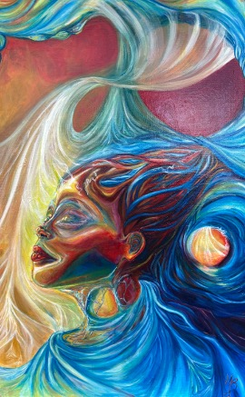

Buskila Lab
School of Medicine
Western Sydney University
Campbelltown, NSW 2560
Australia
Contact
We welcome conversations with students, researchers and collaborators interested in cellular neurophysiology, neuronal excitability, neuron–astrocyte interactions, neurodegeneration and tissue preservation.
School of Medicine
Western Sydney University
Campbelltown, NSW 2560
Australia
